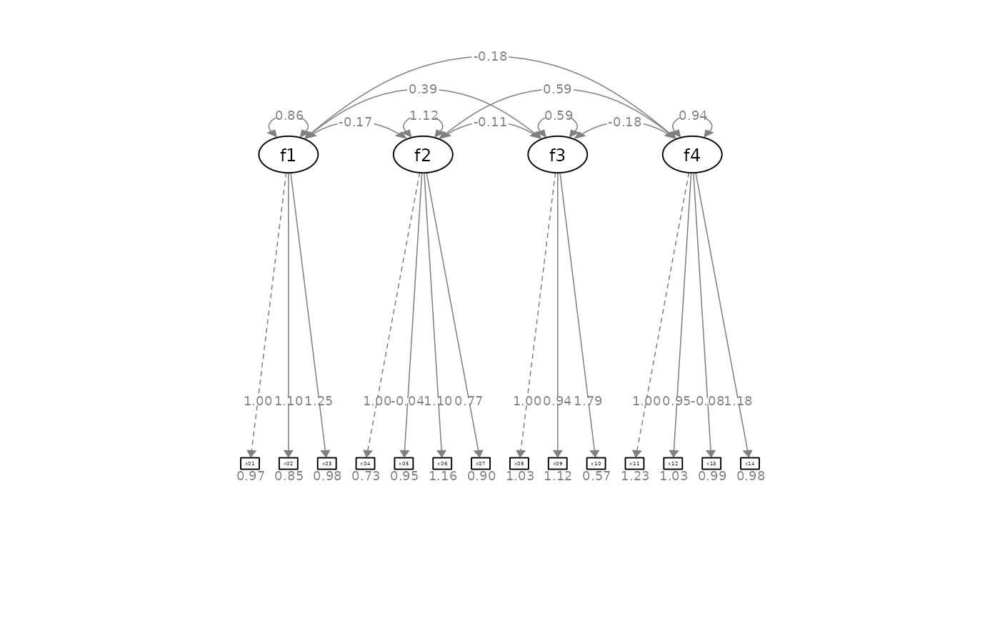

Configure the layout of factors of a CFA graph by semPaths
Source:R/set_cfa_layout.R
set_cfa_layout.RdConfigure the layout of factors and adjust other aspects of a CFA graph by semPaths.
set_cfa_layout( semPaths_plot, indicator_order = NULL, indicator_factor = NULL, fcov_curve = 0.4, loading_position = 0.5, point_to = "down" )
Arguments
| semPaths_plot | A qgraph::qgraph object generated by semPaths, or a similar qgraph object modified by other semptools functions. |
|---|---|
| indicator_order | A string vector of the indicators. The order of the names is the order of the indicators in the graph, when they are drawn on the bottom of the graph. The indicators should be grouped by the factors on which they load on. For example, if x1, x2, x4 load on f2, and x3, x5, x6 load on f1, then vector should be either c("x1", "x2", "x4", "x3", "x5", "x6") or c("x3", "x5", "x6", "x1", "x2", "x4"). Indicators within a group can be ordered in any way. |
| indicator_factor | A string vector of the same length of the indicator order, storing the name of the factor for which each of the indicator in indicator_factor loads on. For example, if x1, x2, x4 load on f2, and x3, x5, x6 load on f1, and indicator_order is c("x3", "x5", "x6", "x1", "x2", "x4"), then indicator_factor should be c("f2", "f2", "f2", "f1", "f1", "f1"). |
| fcov_curve | A number used to set the curvature of the inter-factor covariances. Default is .4. |
| loading_position | The positions of all factor loadings. Default is .5, on the middle of the arrows. Larger the number, closer the loadings to the indicators. Smaller the number, closer the loadings to the factors. |
| point_to | Can be "down", "left", "up", or "right". Specify the direction that the factors "point" to the indicators. Default is "down". |
Value
A qgraph::qgraph based on the original one, with various aspects of the model modified.
Details
Modify a qgraph::qgraph object generated by semPaths based on a confirmatory factor analysis model.
Examples
library(lavaan) library(semPlot) mod <- 'f1 =~ x01 + x02 + x03 f2 =~ x04 + x05 + x06 + x07 f3 =~ x08 + x09 + x10 f4 =~ x11 + x12 + x13 + x14 ' fit_cfa <- lavaan::sem(mod, cfa_example) lavaan::parameterEstimates(fit_cfa)[, c("lhs", "op", "rhs", "est", "pvalue")]#> lhs op rhs est pvalue #> 1 f1 =~ x01 1.000 NA #> 2 f1 =~ x02 1.097 0.000 #> 3 f1 =~ x03 1.247 0.000 #> 4 f2 =~ x04 1.000 NA #> 5 f2 =~ x05 -0.040 0.587 #> 6 f2 =~ x06 1.098 0.000 #> 7 f2 =~ x07 0.771 0.000 #> 8 f3 =~ x08 1.000 NA #> 9 f3 =~ x09 0.937 0.000 #> 10 f3 =~ x10 1.785 0.000 #> 11 f4 =~ x11 1.000 NA #> 12 f4 =~ x12 0.949 0.000 #> 13 f4 =~ x13 -0.077 0.356 #> 14 f4 =~ x14 1.184 0.000 #> 15 x01 ~~ x01 0.969 0.000 #> 16 x02 ~~ x02 0.853 0.000 #> 17 x03 ~~ x03 0.976 0.000 #> 18 x04 ~~ x04 0.725 0.000 #> 19 x05 ~~ x05 0.954 0.000 #> 20 x06 ~~ x06 1.161 0.000 #> 21 x07 ~~ x07 0.903 0.000 #> 22 x08 ~~ x08 1.026 0.000 #> 23 x09 ~~ x09 1.119 0.000 #> 24 x10 ~~ x10 0.566 0.009 #> 25 x11 ~~ x11 1.231 0.000 #> 26 x12 ~~ x12 1.032 0.000 #> 27 x13 ~~ x13 0.990 0.000 #> 28 x14 ~~ x14 0.985 0.000 #> 29 f1 ~~ f1 0.855 0.000 #> 30 f2 ~~ f2 1.119 0.000 #> 31 f3 ~~ f3 0.585 0.000 #> 32 f4 ~~ f4 0.943 0.000 #> 33 f1 ~~ f2 -0.173 0.059 #> 34 f1 ~~ f3 0.387 0.000 #> 35 f1 ~~ f4 -0.178 0.041 #> 36 f2 ~~ f3 -0.112 0.132 #> 37 f2 ~~ f4 0.593 0.000 #> 38 f3 ~~ f4 -0.181 0.014p <- semPaths(fit_cfa, whatLabels="est", sizeMan = 2.5, nCharNodes = 0, nCharEdges = 0, edge.width = 0.8, node.width = 0.7, edge.label.cex = 0.6, style = "ram", mar = c(10,10,10,10))indicator_order <- c("x04", "x05", "x06", "x07", "x01", "x02", "x03", "x11", "x12", "x13", "x14", "x08", "x09", "x10") indicator_factor <- c( "f2", "f2", "f2", "f2", "f1", "f1", "f1", "f4", "f4", "f4", "f4", "f3", "f3", "f3") p2 <- set_cfa_layout(p, indicator_order, indicator_factor, fcov_curve = 1.5, loading_position = .8) plot(p2)p2 <- set_cfa_layout(p, indicator_order, indicator_factor, fcov_curve = 1.5, loading_position = .8, point_to = "left") plot(p2)p2 <- set_cfa_layout(p, indicator_order, indicator_factor, fcov_curve = 1.5, loading_position = .8, point_to = "up") plot(p2)p2 <- set_cfa_layout(p, indicator_order, indicator_factor, fcov_curve = 1.5, loading_position = .8, point_to = "right") plot(p2)